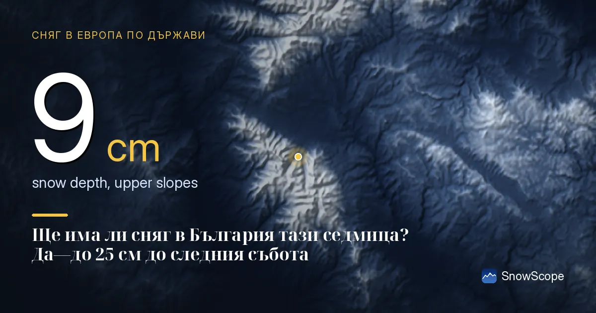

Ще има ли сняг в България тази седмица? Да—до 25 см до следния събота
Ще има ли сняг в България тази седмица? Да—идва значителен снежен фронт към високите върхове, с прогноза за до 25 см през следващите 7 дни и връх от 10 см на 28 ноември. Сега сняг остана само на най-високите склонове, но Банско и Рилските планини вече водят с нов слой.
Вижте снежната прогноза за Банско в приложението SnowScopeДебелина на снега, известия и 3D карта, безплатно.
Голямо снежен фронт следния събота
Картината е ясна: бурна система ще донесе значителни валежи в планините на България между сега и 28 ноември. Нашият снежен модел прогнозира до 25 см нов сняг ще паднат по високите терени през следващите 7 дни, със най-силни снеговалежи в събота 28 ноември, когато се очаква 10 см. Това е вид събитие, което преобърта сезона в високите планини.
Само в следващите 3 дни възможни са до 7 см, така че планините ще работят усилено да изградят база. Това време е важно: Рилските планини вече събраха 7 см през последните 72 часа, докато Витоша и Пиринските планини всяка събраха по 4 см. Банско сега е на 9 см дълбочина и е лидер сред ските.
| Курорт | Дебелина на снега | Нов сняг, 72 ч | Следващите дни | Връх |
|---|---|---|---|---|
| Bansko | 9 cm | 3 cm | 7 cm | 2 516 m |
| Borovets | 4 cm | 4 cm | 8 cm | 2 538 m |
| Malyovista | 4 cm | 3 cm | 7 cm | 1 974 m |
| Kartala | 1 cm | 3 cm | 8 cm | 2 245 m |
| Dobrinishte | 1 cm | 3 cm | 6 cm | 2 226 m |

Днешният сняг е нависок и редък
Сега сняг покрива само около 1 процент от картографираните терени на България. Снежната линия е на 2 300 м, така че само върховете над тази височина имат каквито и да е дълбочина. Под 2 000 м земята е гола. При 2 000–2 500 м средната дълбочина е само 1 см със 35 процента покритие. Само над 2 500 м има значителен сняг: средно 5 см покрива 93 процента на този слой.
Петте ските с какъвто и да е сняг днес (Банско, Боровец, Малиовища, Картала и Добринище) варират от 1 до 9 см. 9 см на Банско при 2 516 м е най-дълбоко, но дори и това е тънко за ранния сезон. Боровец при 2 538 м има 4 см. Това е тънко покритие—камъни ще са близо под повърхността и снегът все още не е стабилен.
Където да наблюдавате най-добрия сняг
Рилските планини са ваш ориентир сега. Те получиха 7 см през 72 часа и се прогнозира да получат още 7 см в следващите 3 дни. Банско, което се намира в Пирините на юг, вече има 9 см и трябва да получи 7 см до сряда. Боровец в Rilската система има 4 см сега, но се прогнозира да получи 8 см, което го прави близо втори по дълбочина до средата на седмицата.
До края на следващата седмица, след главния фронт в събота, високите терени над 2 500 м ще бъдат най-безопасният избор за ски. По-ниските склонове и открити терени ще остават тънки, докато повече сняг се сгъстява. Следете прогнозата отблизо: 10 см в един ден, след това 25 см до уикенда, е истинска промяна от днешното редко покритие.
Как се променя времето
България е в сухо намаление. Преди седмица 440 км² от високите терени имаше снежно покритие; днес само 420 км² го имат. Линията на тренда показва, че минаватата седмица видя как покритието се срива от 690 км² на 16 ноември до само 100 км² до 20 ноември—драматично топене пред топла въздушна маса. След това на 21 ноември картината се промени: Банско скочи от 2 см до 10 см в един ден, знак че валежи пристигнаха.
Днешният снимак—420 км² покрити, 3 см нов сняг през 72 часа—отбелязва ръба на тази преходност. Идващата система е част от по-голям модел. Румъния, на север, вече се белее (25 процента покритие) и се прогнозира да получи до 51 см в следващите 7 дни, така че същата въздушна маса ще натисне сняг в България.
Какво следват следващите няколко дни
Между сега и 25 ноември, повечето области ще видят 6–8 см нов сняг, с най-високите склонове (над 2 500 м) печелят най-много. Банско е прогнозирано 7 см, Боровец 8 см и Картала 8 см. До сряда и петте снежни ските ще имат повече дълбочина отколкото днес.
След това идва главното събитие: събота 28 ноември, когато 10 см е моделирано да паднат. Това е най-снежният ден в прогнозния период. Седмицата след това (дни 8–14) е по-спокойна—само 8 см—така че събитието на ноември сняг пристига тази събота и дните преди нея.
Защо планините имат значение сега
Ранносезонният сняг в сухите планини на България е ценен, защото базата е тънка и нов сняг е единственият градител. С камъни точно под повърхността, всеки сантиметър брои. 25 см прогнозираното за следващите 7 дни ще трансформира високите върхове от редки до пригодни за ски, но само над 2 500 м—по-ниските склонове ще остават тънки.
Ако планирате да отидете извън пистите когато падне нов сняг, проверете официалния лавинен бюлетин за българските планини. Нов сняг на тънка база може да се плъзга, особено на стръмни терени. Следете прогнозата за събота; тогава сезонът наистина начертава своя форма.
Съвети за скиори
- Останете високо: над 2 500 м най-добрият сняг ще се формира след събитието в събота. Под 2 000 м остава гола.
- Банско и Боровец ще водят по дълбочина до средата на седмицата. Гледайте тези две ските първи при решаване къде да скиирате.
- Събота 28 ноември е ключовият ден: 10 см се прогнозира да паднат. Планирайте да сте в планината, за да преживеете преходът от тънко към изграждаемо покритие.
- Преди да отидете извън пистите, проверете официалния лавинен бюлетин за България. Нов сняг на тънка база е плъзгаща опасност на стръмни склонове.
- Ранносезонният сняг лежи на камъни. Очаквайте тънко покритие в долините и очаквайте камъни да показват сквозь на по-слабо стръмни терени, докато дълбочината се изграждат по-нататък.
About these numbers
Resort snow depths are the deepest snow on the resort's upper slopes on the date shown; they are estimates for an area, not a measurement at one point. Forecasts can change. Always read the official avalanche bulletin before going off-piste.
Cite this report
For research, teaching or the press: the numbers and charts are free to reuse under CC BY 4.0 with this citation.
SnowScope (2026), Ще има ли сняг в България тази седмица? Да—до 25 см до следния събота, https://snowscope.app/blog/bg/2026/11/bulgaria-snow-on-the-way-22-november-2026.html, accessed 2026-11-22
SnowScope (Atlas Labs). (2026, November 22). Ще има ли сняг в България тази седмица? Да—до 25 см до следния събота. SnowScope snow reports. https://snowscope.app/blog/bg/2026/11/bulgaria-snow-on-the-way-22-november-2026.html
BibTeX
@misc{snowscope2026bulgariasnowontheway22no,
author = {{SnowScope (Atlas Labs)}},
title = {Ще има ли сняг в България тази седмица? Да—до 25 см до следния събота},
year = {2026},
month = nov,
howpublished = {\url{https://snowscope.app/blog/bg/2026/11/bulgaria-snow-on-the-way-22-november-2026.html}},
note = {Published 2026-11-23 00:50 UTC; accessed 2026-11-22}
}· CC BY 4.0 · Methods, data and tools →
Bansko: snow and temperature by height, this winter vs last (tools) →
Follow Банско
Безплатно: съобщение, когато идва нов сняг, и прогнозата всяка сутрин.